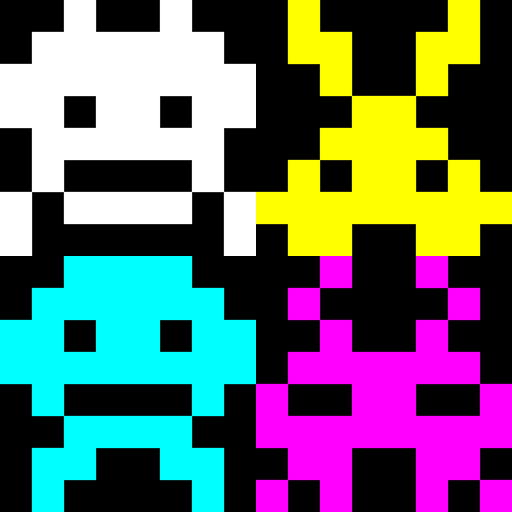
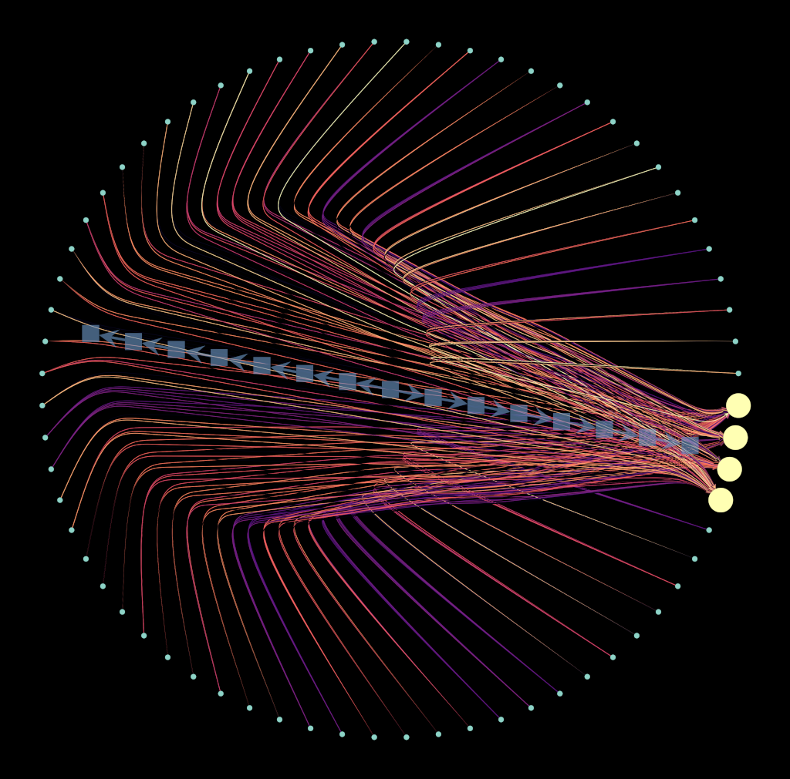
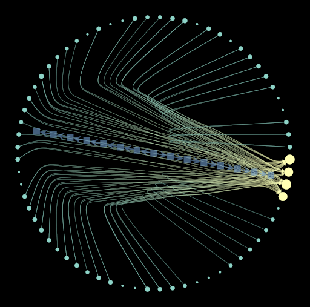

AANN (Analog Artificial Neural Network) trains a small neural network to recognize pixel-art Space Invaders. It then transforms what the model has learned into groups of optical fibers. When an image is presented, light travels through those fibers, making the classification process visible inside a physical object.
AANN
A neural network made visible with light.

[ overview ]
[ graph representation ]


Each line represents a learned weight: how strongly one input pixel contributes to identifying a class. The continuous graph preserves the differences between these weights. The discretized graph uses a 0.6 cutoff to remove weaker connections and keep the strongest ones, producing a simpler map that can be physically constructed with optical fibers.
[ records ]
Each class is represented by a group of optical-fiber ends. Training determines which input pixels connect to each group. When an image is presented, its active pixels send light through those connections. The group receiving the most active light paths indicates the model's prediction.